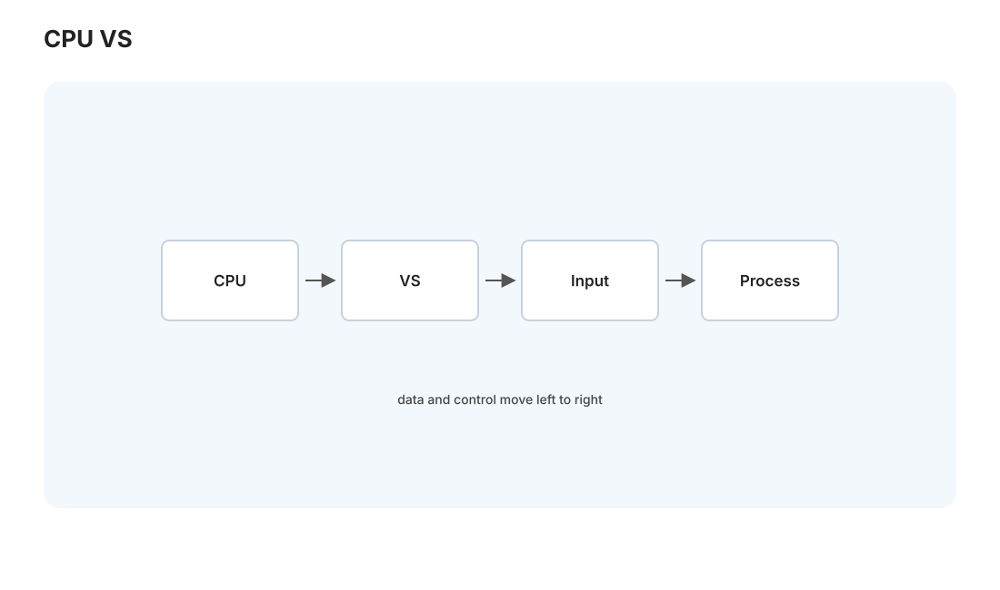
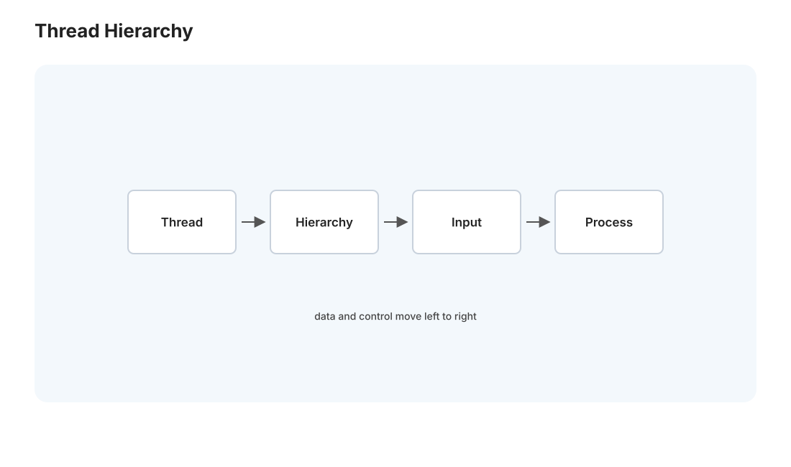

GPU I · CUDA 编程模型
对标：CMU 15-418 GPU 篇 / Programming Massively Parallel Processors（PMPP, Hwu–Kirk）/ NVIDIA CUDA C++ 指南 ｜ 前置：par-01（数据并行）、csapp-02（存储层级） CPU 是"少数强核"（几个超快、乱序、大缓存的核心），GPU 是"数千弱核"（成千上万个简单核心）。这个架构差异逼出一种全新的编程思维——大规模数据并行（SIMT）。这一页讲清 GPU 的硬件模型、CUDA 的线程层级、以及那条决定 GPU 性能生死的内存层级。你天天用的扩散模型（comfy 课）、大模型推理（mlsys 线）全跑在这套模型上。本页起 CUDA 实验在你的 Win 4060 Ti 上跑。
1. 为什么 GPU 长这样：吞吐 vs 延迟

CPU 和 GPU 优化的是两个不同目标：
- CPU 优化延迟：让单个任务尽快完成——大缓存、乱序执行、分支预测、深流水线（perf-01），把硅片大量用在"让一条指令流跑得快"的控制逻辑上。
- GPU 优化吞吐：让海量任务的总完成量最大——把硅片几乎全用在算术单元上，控制逻辑极简。单个任务不快，但同时跑几万个，总吞吐碾压。
代价：GPU 靠"线程多到能掩盖延迟"工作——一个线程等内存时，硬件瞬间切换到别的就绪线程（零开销切换，因为寄存器都在片上），于是内存延迟被大量并发线程掩盖掉。"用并发掩盖延迟"是 GPU 的核心生存策略，与 CPU"用缓存降低延迟"是两条路。推论：GPU 上线程不够多 = 延迟藏不住 = 性能差。
2. SIMT 与线程层级

CUDA 的执行模型叫 SIMT（单指令多线程）——你写一个核函数（kernel）描述"一个线程做什么"，然后启动成千上万个线程同时执行它，每个线程用自己的线程 ID 处理不同数据（数据并行 par-01 的极致）。线程按三级组织：
Grid（整个 kernel 启动）
└── Block（线程块，可协作，共享 shared memory）
└── Thread（单个线程，有唯一 ID）
└── Warp（32 线程一组，硬件调度的最小单位）
- Block：一批线程，能通过共享内存协作 + 同步（
__syncthreads()）。一个 block 调度到一个 SM（流多处理器）上执行。 - Warp（32 线程）：硬件真正的调度单位——一个 warp 的 32 个线程锁步执行同一条指令（SIMT）。这引出 GPU 最重要的性能陷阱——
分支发散（warp divergence）：如果一个 warp 里的线程走了不同的 if 分支，硬件只能串行执行每个分支（先跑 if 的线程、再跑 else 的，互相等待）——32 线程的并行度塌缩。所以 GPU 代码要尽量让同一 warp 的线程走相同路径（🔗 与 perf-01 的分支预测是不同机制但同一教训：控制流的规整性决定性能）。
3. 内存层级：GPU 性能的生死线
GPU 有自己的存储金字塔（csapp-02 的 GPU 版），用错内存层级是 GPU 代码慢的头号原因：
| 层 | 速度 | 作用域 | 关键用法 |
|---|---|---|---|
| 寄存器 | 最快 | 每线程 | 线程私有变量 |
| 共享内存（shared） | 极快（片上） | 每 block | 手动管理的缓存，block 内线程协作复用数据 |
| L1/L2 缓存 | 快 | — | 硬件自动 |
| 全局内存（global/HBM） | 慢（相对） | 全部线程 | 大数据主场，但访问要"合并" |
两个决定性能的铁律：
- 合并访问（coalescing）：一个 warp 的 32 线程若访问连续的全局内存地址，硬件把它们合并成一次内存事务——高效；若访问分散（跨步大），退化成 32 次事务——慢 32 倍。"让相邻线程访问相邻地址"是 GPU 内存优化的第一条（🔗 csapp-02 缓存行、perf-02 SoA 布局在 GPU 上放大成生死问题）。
- 善用共享内存（tiling）：全局内存慢，故把数据分块搬进共享内存、block 内线程反复复用、算完再换块——这正是 csapp-02/perf-02 的分块思想在 GPU 上的核心应用。矩阵乘、卷积、attention 全靠它。
4. 一个 kernel 的样子：向量加法
最小完整例子，理解 CUDA 的骨架：
__global__ void vec_add(float* a, float* b, float* c, int n) {
int i = blockIdx.x * blockDim.x + threadIdx.x; // 我是第几个线程 → 处理哪个元素
if (i < n) c[i] = a[i] + b[i]; // 边界检查（线程数常多于数据）
}
// 启动：vec_add<<<num_blocks, threads_per_block>>>(a, b, c, n);
blockIdx * blockDim + threadIdx 是每个线程算出"我负责哪个数据"的通用公式，务必刻进肌肉。
数据搬运：CPU（host）和 GPU（device）内存分离——要 cudaMemcpy 把数据搬上 GPU、算完搬回。这个 PCIe 传输常是瓶颈——所以要么减少搬运、要么让计算量大到摊薄传输（Roofline 思维 perf-01：传输当"内存访问"、kernel 当"计算"）。统一内存（unified memory）简化编程但不改变物理成本。
5. 练习与要点
例 1（线程 ID 映射） 启动 <<<4, 256>>>（4 块 × 256 线程 = 1024 线程），第 3 块第 10 个线程处理哪个元素？（2*256+9 = 521）——把全局索引公式算熟，这是所有 kernel 的起点。
例 2（合并 vs 分散） 对比"相邻线程读相邻元素"和"相邻线程读跨步 32 的元素"的带宽——后者慢一个数量级。GPU 内存合并的威力亲手测（[L08] 的一部分）。
例 3（发散代价） 写一个 kernel，warp 内一半线程走 if 一半走 else，对比无发散版本——理解"SIMT 锁步"下分支发散如何腰斩并行度。\(\blacksquare\)
▶ 实验 L08（CUDA reduction + scan）：
labs/L08-cuda-reduce/—— 归约（求和）从 naive → shared memory → warp shuffle 三级优化，前缀和（scan）。跑在 Win 4060 Ti（CUDA toolkit）。这是 GPU 并行原语的必修，也是 gpu-02 优化的热身。
下一页：GPU II——核函数优化阶梯：从能跑到跑满带宽/算力，以及一个玩具 attention kernel（FlashAttention 的最小直觉）。